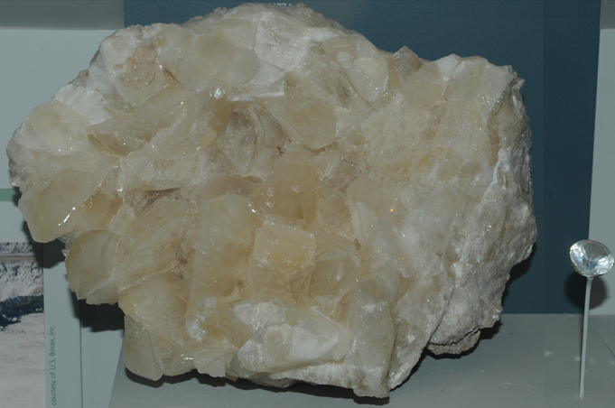

|

| CaB3O4(OH)3.H2O
This sample of colemanite is displayed in the Smithsonian Museum of Natural History. Colemanite is an oxide of calcium and boron with the composition CaB3O4(OH)3.H2O. The sample at left is about 18 cm across and is from Lower Biddy McCarthy mine, Ryan, California. The accompanying colemanite gem is 14.9 carats and is from Death Valley, Inyo County, California.
|